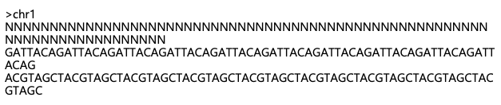
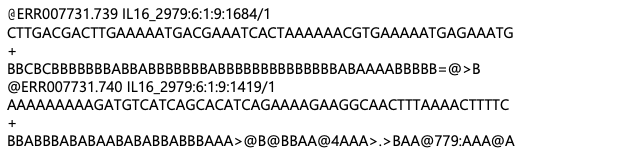
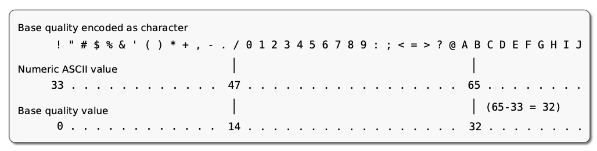
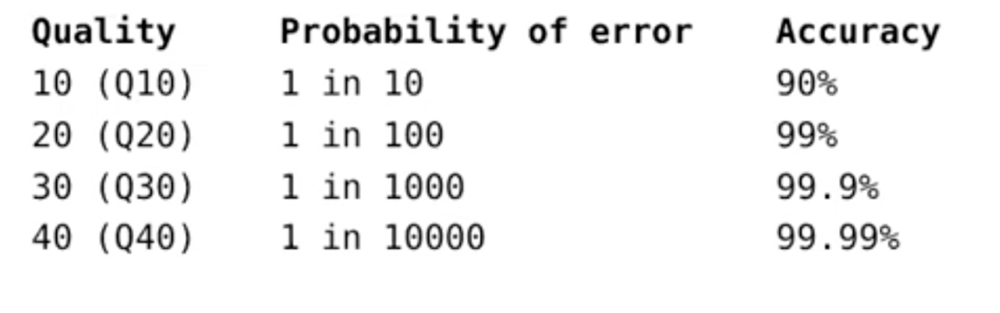
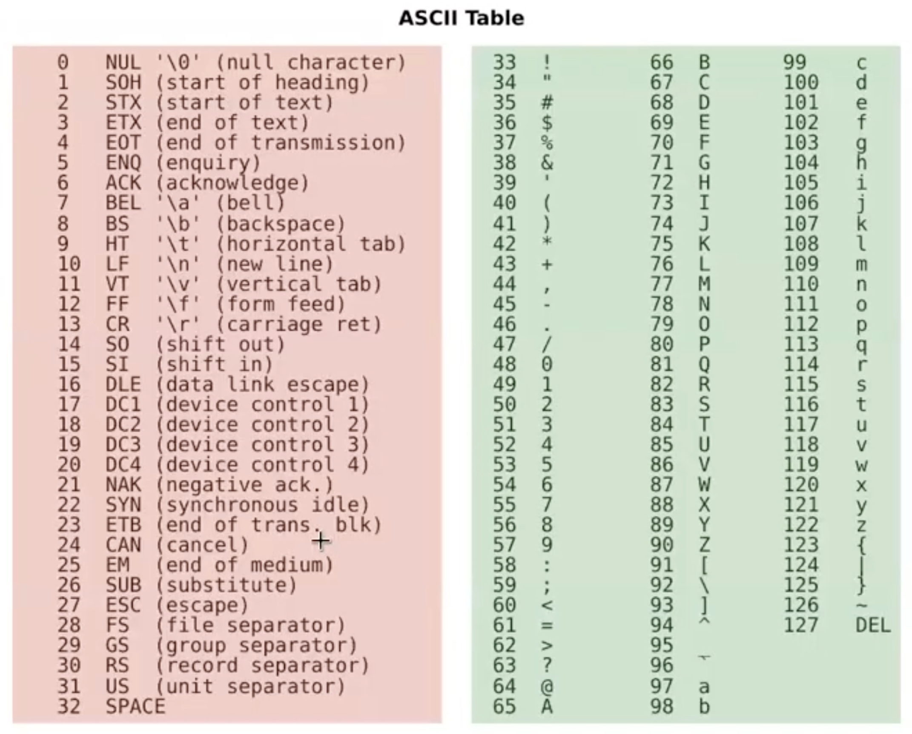
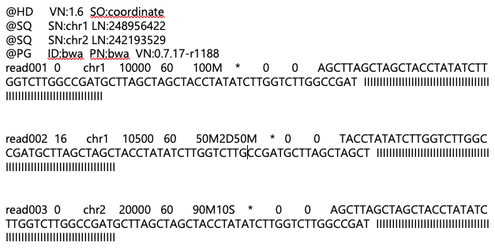
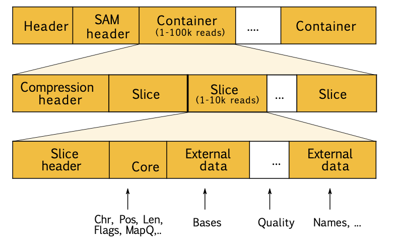

Manual
Sequence Data Formats
These formats store raw or processed nucleotide and protein sequences.
The FASTA file format
Here’s an example of 4 lines from a human reference genome FASTA file:

">chr1" is the header for chromosome 1. Each chromosome has its own header line in the file.
Headers usually contain additional details like source, version, or length, e.g.:
>chr1 dna:chromosome chromosome:GRCh38:1:1:248956422:1.
The following lines are the “sequence lines”.
They contain nucleotide bases (A, T, C, G, and sometimes N for unknown bases). In FASTA files, the sequence is often wrapped to fit within 80 characters per line.
The FASTQ file format
FASTQ is a simple format for raw unaligned sequencing reads. This is an extension to the FASTA file format and it is composed of sequence and an associated per base quality score.

The quality of the sequenced nucleotides is encoded in ASCII characters with decimal codes 33-126.

The ASCII code of “A” is 65. For a nucleotide that has the quality score encoded by A, this can be translates to quality score of Q=65−33=32.
The formula to compute the phred quality score is: P = 10−Q/10

The figure above shows the interpretation of the quality scores, in terms of probability of error and accuracy.
Beware:
multiple quality scores were in use: Sanger, Solexa, Illumina 1.3+.
paired-end sequencing produces two FASTQ files.

The ASCII table (American Standard Code for Information Interchange) is a character encoding standard that maps 128 characters (0–127) to numeric codes. It includes letters (uppercase and lowercase), digits, punctuation marks, control characters (e.g., newline, tab), and special symbols, enabling computers to represent and process text.
Alignment and Mapping Formats
These formats store sequence alignments against a reference genome.
The SAM file formats

A SAM (Sequence Alignment/Map) file is a text-based format for storing biological sequences aligned to a reference genome. It consists of a header section (starting with @) and an alignment section (one line per read). Here’s an example of the first 10 lines from a typical SAM file aligned to the human reference genome:
Header Lines (@):
@HD: Specifies the version and sorting order.
@SQ: Lists the reference sequences (e.g., chr1, chr2) with their lengths.
@PG: Records the alignment program used.
Alignment Lines (non-@) fields:
Column 1: Query name (read001, read002, etc.).
Column 2: Flag (alignment information, e.g., strand orientation).
Column 3: Reference name (e.g., chr1, chr2).
Column 4: Alignment position.
Column 5: Mapping quality.
Column 6: CIGAR string (alignment operations).
Column 7-9: Mate pair information (if applicable).
Column 10: Sequence of the read.
Column 11: Quality scores.
Note that BAM can contain
• unmapped reads
• multiple alignments of the same read
• supplementary (chimeric) reads
In a SAM file, the Flag column (usually the second column in an alignment line) is an integer value that encodes various information about a read’s alignment using a bitwise representation. Each bit in the flag represents a specific property of the alignment, and the hexadecimal (Hex), decimal (Dec), and binary representations can be used to interpret these flags.
Here’s a detailed explanation:
Structure of the Flag
The flag is an integer value whose binary representation consists of 12 bits, each indicating a specific property of the read. Here’s the breakdown:
| Bit | Hex | Dec | Description |
|---|---|---|---|
| 0 | 0x1 | 1 | The read is paired in sequencing. |
| 1 | 0x2 | 2 | The read is mapped in a proper pair. |
| 2 | 0x4 | 4 | The read is unmapped. |
| 3 | 0x8 | 8 | The mate is unmapped. |
| 4 | 0x10 | 16 | The read is on the reverse strand. |
| 5 | 0x20 | 32 | The mate is on the reverse strand. |
| 6 | 0x40 | 64 | The read is the first in a pair. |
| 7 | 0x80 | 128 | The read is the second in a pair. |
| 8 | 0x100 | 256 | The alignment is not primary. |
| 9 | 0x200 | 512 | The read fails quality control checks. |
| 10 | 0x400 | 1024 | The read is a PCR or optical duplicate. |
| 11 | 0x800 | 2048 | The read is supplementary (e.g., split-read). |
The flag is the sum of all applicable properties. For example:
For a flag with value 83 (a written in decimal), the binary is 0000001010011.
To decode the bits with value 1, start from right to left:
1 (0x1): On position 0 from right to left, the bit value is 1. This means that the read is paired.
2 (0x2): On position 1 from right to left, the bit value is 1. This means that the read is mapped in a proper pair.
16 (0x10): On position 4 from right to left, the bit value is 1. This means that the read is on the reverse strand.
64 (0x40): On position 6 from right to left, the bit value is 1. This means that the read is the first read in a pair.
Overall interpretation of a flag with value 83: this is the first read in a properly paired alignment, and it is mapped to the reverse strand.
How to interpret a SAM file flag
Take the decimal value in the second column.
Convert it to binary (or refer to the above table).
Decode each bit to determine the alignment properties.
The BAM file format
The BAM (Binary Alignment/Map) format is a binary, compressed version of the widely-used SAM (Sequence Alignment/Map) format. It was specifically developed to enable fast processing, efficient storage, and random access to large-scale genomic data. Utilizing BGZF (Block GZIP) compression, BAM files support indexing, making them highly efficient for quick retrieval and visualization of specific alignments.
Key Features of the BAM Format
Universal Compatibility: BAM can store alignments from a variety of mapping tools and sequencing technologies, making it a versatile format for genomic data analysis.
Compact Size: BAM files are designed to save disk space without compromising data integrity. For example, 112 billion base pairs (Gbp) of Illumina sequencing data require just 116GB of storage in BAM format.
Indexing Support: BAM files can be indexed, allowing for the rapid retrieval and visualization of specific regions of interest in the genome.
Logical Grouping: Reads can be organized into logical groups such as lanes, libraries, and samples, providing flexibility for downstream analyses.
Integration with Variant Calling: BAM files are widely supported by tools for variant calling and other bioinformatics workflows.
Visualization Compatibility: BAM files are compatible with popular genome browsers and visualization tools, including
IGV
Ensembl, and
UCSC Genome Browser.
SAM/BAM Tools
Several tools have been developed for interacting with SAM and BAM files:
Samtools: A comprehensive toolkit developed by the Wellcome Sanger Institute for manipulating SAM and BAM files.
Picard Tools: Developed by the Broad Institute, this suite provides utilities for processing and analyzing BAM files.
Visualization Tools:
Genome browsers such as IGV (Integrative Genomics Viewer),
Ensembl, and
UCSC Genome Browser allow users to explore BAM files interactively.
The BAM format is an essential component of modern genomic workflows, offering an efficient, versatile, and widely-supported solution for storing and analyzing alignment data.
Reference-Based Compression
As sequencing technologies continue to advance, the volume of genomic data generated has increased exponentially, creating a growing challenge for data storage and management. While BAM files are efficient compared to uncompressed formats, they remain relatively large, requiring approximately 1.5–2 bytes per base pair. This size makes BAM files increasingly difficult to handle as disk capacity improvements fail to keep pace with the rapid growth in sequencing throughput.
Limitations of BAM Compression
BAM files employ a single conventional compression technique (BGZF compression) to store various types of data, including:
Read bases: Every nucleotide in the sequencing read is stored in the file.
Base qualities: Quality scores for each base are preserved, often contributing significantly to the file size.
While effective, this approach compresses all data types uniformly, which limits opportunities for optimizing compression specific to genomic contexts.
The Case for Reference-Based Compression
Reference-based compression addresses these limitations by leveraging the known reference genome to reduce redundancy in storage. Instead of storing the full sequence and quality scores for every read:
Alignment Information: Only deviations or differences from the reference genome (e.g., mismatches, insertions, deletions) are stored.
Simplified Data Representation: Reads that match the reference genome perfectly require minimal data storage.
Selective Compression: Different data types (e.g., quality scores, sequence alignments) can be compressed differently, optimizing file sizes further.


Benefits of Reference-Based Compression
Drastic Reduction in File Size: By only storing differences from the reference genome, file sizes can be reduced significantly compared to BAM files.
Efficient Data Retrieval: Reference-based compressed files can still support random access, enabling efficient querying of specific genomic regions.
Scalability: Smaller files make it easier to store and transfer the growing amounts of sequencing data generated by high-throughput technologies.
Looking Ahead
While BAM files have been a cornerstone of genomic data storage, reference-based compression offers a promising alternative to address the challenges of handling ever-larger datasets. By focusing on reducing redundancy and optimising compression techniques, reference-based approaches can ensure that storage solutions keep pace with advancements in sequencing technology.
The CRAM file format
CRAM is a highly efficient file format for storing aligned sequencing data, offering significant compression improvements over BAM by incorporating three key concepts:
Reference-Based Compression: Instead of storing full sequences, CRAM files record differences from a reference genome, reducing redundancy and file size.
Controlled Loss of Quality Information: Users can opt for lossy compression by discarding or simplifying base quality scores, further minimizing storage requirements without heavily impacting downstream analyses.
Optimized Compression: Different types of data (e.g., base qualities, metadata, and extra tags) are compressed using tailored methods for maximum efficiency.
Key Features of CRAM
Smaller File Sizes: CRAM files are approximately 60% the size of BAM files in lossless mode, with further reductions possible in lossy mode.
Maturity and Adoption: CRAM is well-integrated into production pipelines, with:
- Support in Samtools/HTSlib since 2014.
Integration with Picard and GATK in 2015.
CRAM’s efficient compression and flexibility make it a powerful alternative to BAM, especially for large-scale sequencing projects.

Variant Calling Formats
These formats store genetic variations detected in sequencing data.
Variant Call Format (VCF) Summary
The Variant Call Format (VCF) is a widely-used, standardized file format for storing genetic variation data. Designed to handle diverse types of genomic variations, including SNPs, indels, and structural variations, VCF is integral to genomic workflows and supports the analysis of datasets involving multiple samples.
Key Features
VCF is a tab-delimited text file format that efficiently captures and organizes genomic variations. It supports all types of variants, from single nucleotide polymorphisms (SNPs) to large structural changes. With its flexibility and extensibility, VCF accommodates per-site and per-sample annotations, enabling rich metadata integration. Key fields include:
- INFO: This column contains site-level annotations such as functional impacts or allele frequencies.
- FORMAT: This column stores sample-specific details, like sequencing depth (DP) and genotype quality (GQ), with a dedicated column for each sample.
To ensure efficient storage and retrieval, VCF files are compressed using BGZF (bgzip) and indexed with TBI/CSI (tabix), allowing quick random access to specific genomic regions.
Genotype Representation
VCF employs a straightforward system to represent genotypes, using numbers to refer to the reference and alternate alleles. The reference allele is always denoted as 0, while the first alternate allele is 1, the second is 2, and so on. This encoding supports diploid organisms by using combinations of alleles:
Homozygous Reference:
0/0(e.g., A/A if A is the reference).Homozygous Alternative:
1/1(e.g., G/G if G is the first alternate allele).Heterozygous:
0/1or1/2(e.g., A/G or G/T).
This allele numbering system simplifies the representation of complex genotypes while maintaining clarity.
Role in Genomic Analysis
The VCF format is a cornerstone of genomic workflows, supporting data storage, sharing, and analysis. Starting with sequencing data in FASTQ format, genomic analysis pipelines align reads (producing BAM files) and call variants, which are stored in VCF format. VCF captures both per-site details and per-sample information, ensuring that all relevant data is preserved. Its ability to handle multiple samples in a single file makes it scalable for population-level studies.
Tumor-Specific Annotations in VCF
In cancer genomics, VCF files often include additional annotations tailored for tumor samples. For example:
- AF (Allelic Fraction) records the proportion of alternate alleles observed in a tumor sample.
- GERMQ (Germline Quality) provides a Phred-scaled quality score indicating whether alternate alleles are unlikely to be germline variants.
- PON (Panel of Normals) marks sites that are found in a reference panel of normal samples, helping to identify potential artifacts.
These specialized annotations enhance the utility of VCF in clinical and research applications focused on cancer.
Binary Call Format (BCF)
To further improve efficiency, the Binary Call Format (BCF) was developed as a binary version of VCF. BCF rearranges fields for faster access and compresses data more effectively, making it ideal for large-scale genomic studies. It retains all the capabilities of VCF while optimizing for speed and storage.
Example VCF File
##fileformat=VCFv4.2
##source=VariantCallerTool
##reference=GRCh38
##INFO=<ID=AF,Number=A,Type=Float,Description="Allele Frequency">
##INFO=<ID=GERMQ,Number=1,Type=Integer,Description="Phred-scaled quality that ALT alleles are not germline">
##INFO=<ID=PON,Number=0,Type=Flag,Description="Present in panel of normals">
##FORMAT=<ID=GT,Number=1,Type=String,Description="Genotype">
##FORMAT=<ID=DP,Number=1,Type=Integer,Description="Read Depth">
##FORMAT=<ID=GQ,Number=1,Type=Integer,Description="Genotype Quality">
#CHROM POS ID REF ALT QUAL FILTER INFO FORMAT SAMPLE1 SAMPLE2
chr17 7674236 . G A 99 PASS AF=0.35;GERMQ=99;PON GT:DP:GQ 0/1:30:99 0/0:28:98
chr12 25398284 . T C 200 PASS AF=0.12 GT:DP:GQ 0/1:25:70 0/0:22:65
chr5 11234567 . C T 150 PASS AF=0.50;GERMQ=80 GT:DP:GQ 1/1:45:99 0/1:18:50Explanation of Each Column
Header Lines:
##fileformat: Indicates the VCF version (v4.2 in this case).
##INFO and ##FORMAT: Define metadata for INFO and FORMAT fields.
Data Columns:
CHROM: Chromosome name (e.g., chr17).
POS: Position of the variant on the chromosome.
ID: Variant ID (e.g., . means no specific ID is provided).
REF: Reference allele at this position (e.g., G).
ALT: Alternate allele(s) at this position (e.g., A).
QUAL: Quality score for the variant call (e.g., 99 indicates high confidence).
FILTER: Indicates whether the variant passed filters (e.g., PASS).
INFO: Additional annotations, such as:
AF: Allele frequency (e.g., AF=0.35 means 35% of reads support the alternate allele).
GERMQ: Phred-scaled quality that the variant is not germline.
PON: Indicates the site is present in a panel of normals.
FORMAT: Defines the per-sample fields, such as:
GT: Genotype (e.g., 0/1 = heterozygous, 1/1 = homozygous alternate).
DP: Read depth at the site.
GQ: Genotype quality score.
SAMPLES: Individual sample data, such as: - SAMPLE1: Tumor sample (e.g., 0/1:30:99 means heterozygous, 30 reads, and high genotype quality). - SAMPLE2: Normal sample for comparison.
What This File Represents
chr17:7674236: A heterozygous G>A mutation is observed in SAMPLE1, with an allele frequency of 35%. It is also flagged as present in a panel of normals (PON), indicating it might not be tumor-specific.chr12:25398284: A low-frequency T>C mutation (allele frequency 12%) is observed in SAMPLE1, likely a subclonal event.chr5:11234567: A homozygous C>T mutation in the tumor sample (SAMPLE1) but only heterozygous in the normal sample (SAMPLE2).
Other important information
A CIGAR string (Compact Idiosyncratic Gapped Alignment Report) is a sequence of operations used in SAM/BAM files to describe how a read is aligned to a reference genome. It specifies matches, mismatches, insertions, deletions, and other events in the alignment.
Structure of a CIGAR String
A CIGAR string consists of a series of operations, each represented by a length (number) followed by a character (operation type).
Common Operations:
M: Match (alignment match or mismatch).
Example:10M= 10 bases aligned (could include mismatches).I: Insertion (relative to the reference).
Example:5I= 5 bases inserted in the query sequence.D: Deletion (relative to the reference).
Example:3D= 3 bases deleted in the reference sequence.S: Soft clipping (query sequence bases not aligned but present in the sequence).
Example:8S= 8 bases clipped from the start or end.H: Hard clipping (query sequence bases not aligned and removed from the sequence).
Example:10H= 10 bases clipped and not stored in the sequence.N: Skipped region (in the reference).
Example:100N= 100 bases skipped in the reference (e.g., introns in RNA-Seq).P: Padding (used with insertions or deletions in multiple sequence alignment).=: Exact match to the reference.X: Mismatch to the reference.
Examples:
Ref: ACGTACGTACGTACGT
Read: ACGT----ACGTACGA
Cigar: 4M 4D 8M
Ref: ACGT----ACGTACGT
Read: ACGTACGTACGTACGT
Cigar: 4M 4I 8M
Ref: ACTCAGTG--GT
Read: ACGCA-TGCAGTtagacgt
Cigar: 5M 1D 2M 2I 2M 7S
** Key Takeaways:**
CIGAR strings describe how the query sequence aligns to the reference genome.
They are critical for understanding alignments in SAM/BAM files.
Tools like
samtoolsorIGVcan help visualize alignments and interpret CIGAR strings.
The MAF file format
MAF stands for “Mutation-Annotation Format” and is a tab-delimited text file containing aggregated information from VCF files (NCI-GDC). It aggregates lots of information – 120+ fields per mutation! You can review all these at: https://docs.gdc.cancer.gov/Data/File_Formats/MAF_Format/
You can convert between VCF and MAF via vcf2maf tools!
perl vcf2maf.pl –input-vcf [vcf_file] –output-maf
[maf_file] –vep-path /cm/shared/apps/vep/ensembl-vep-
release-106.1/ –vep-data /mnt/Archives/vep/106/38/ –ref-
fasta [fasta_file] –tumor-id [tumor] –normal-id [normal]
GA4GH
The Global Alliance for Genomics and Health (GA4GH) is an international coalition dedicated to advancing human health by creating frameworks and standards for sharing genomic and clinical data. Its mission is to enable responsible, ethical, and secure global collaboration in genomics research and healthcare.
Core Mission:
- Establish a common framework to facilitate the sharing of genomic and clinical data.
- Improve human health through international collaboration and innovation.
Working Groups
GA4GH is organized into several working groups, each focusing on a specific aspect of genomic data sharing:
Clinical: Applies genomics to healthcare and medicine.
Regulatory and Ethics: Addresses legal, ethical, and policy issues related to genomic data.
Security: Ensures the privacy and protection of sensitive genomic data.
Data: Develops tools, resources, and initiatives to enhance data sharing and analysis.
Key Projects of the Data Working Group
Beacon Project: Tests global willingness to share genetic data.
BRCA Challenge: Advances understanding of breast and other cancers by studying BRCA-related genetic variants.
Matchmaker Exchange: Connects researchers with data on rare phenotypes or genotypes.
Reference Variation: Standardizes how genomes are described to improve interpretation and assembly.
Benchmarking: Creates toolkits for evaluating variant calling in germline, cancer, and transcriptomic data.
File Formats: Develops and maintains standards such as CRAM, SAM/BAM, and VCF/BCF for efficient genomic data storage and processing.
File Format Standards
GA4GH maintains file format standards through resources like the HTS Specifications repository (http://samtools.github.io/hts-specs/), which supports interoperability and efficient data management in genomics.
Additional Resources:
1. File format tutorial - University of Connecticut
2. UCSC Galaxy - Data file formats
3. 12 Common Bioinformatics Files Types Explained (Youtube Video)